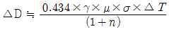
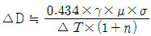
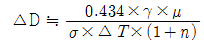
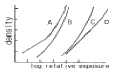

방사선비파괴검사기사(구) (2005-03-06 기출문제)
1과목: 방사선투과시험원리
1. 투과사진의 촬영에서 계조계의 농도차가 가장 큰 사진을 얻을 수 있는 조건, 즉 관전압과 사진농도로 짝지어진 것은?
- 160kVp, D=2.50
- 250kVp, D=1.00
- 160kVp, D=1.00
- 250kVp, D=2.50
(정답률: 알수없음)

2. 방사선투과시험에 관한 설명으로 옳은 것은?
- 투과사진의 콘트라스트가 식별한계 콘트라스트보다 작을 때 결함이 식별된다.
- 필름관찰등(Film viewer)은 투과사진 관찰시 투과광을 육안 관찰의 목적으로 준비된 조명기구를 말한다.
- 형광 증감지를 사용하면 저감도 필름의 감도보다 5 ∼ 10배 정도의 감도를 높일 수 있다.
- 백색 X선 파장의 크기는 관전류에 비례한다.
(정답률: 알수없음)
3. 2차방사선 또는 산란방사선의 영향을 줄이기 위해 시험품 주위에 놓는 고밀도의 물질을 무엇이라 하는가?
- 필터
- 마스크
- 카세트
- 납증감지
(정답률: 알수없음)
4. 비파괴 검사의 신뢰도에 영향을 미치는 요소와 가장 관계가 먼 것은?
- 검사 비용
- 기술자의 능력
- 검사 장치
- 검사 방법의 선택
(정답률: 알수없음)
5. 초점 크기와 콘트라스트의 관계에 있어서 시험체 두께 T, 결함 두께 ΔT일 때 농도차 ΔD는 다음 중 어느 식으로 나타낼 수 있는가? (단, γ는 film contrast, μ는 흡수계수, σ는 선원 크기에 의한 상의 선명도에 따른 보정계수, n은 투과선량에 대한 산란선량의 비)
- ΔD ≒ 0.434×γ×μ×σ×ΔT×(1+n)



(정답률: 알수없음)
6. 결함의 깊이를 측정할 수 있는 비파괴시험 방법은?
- 자분탐상시험
- 초음파탐상시험
- 침투탐상시험
- 와전류탐상시험
(정답률: 알수없음)
7. 방사선투과검사의 신뢰도를 높이기 위한 방법으로 관계가 적은 것은?
- 교육 훈련을 통한 검사자의 기량 향상
- 검사에 적합한 규격의 선정과 적용
- 방사선 안전관리를 통한 효율적인 작업관리
- 시험체에 적합한 검사방법의 선정
(정답률: 알수없음)
8. 방사선의 노출인자를 결정할 때 고려해야 할 내용으로 잘못된 것은?
- X선의 경우, 관전압은 노출시간을 좁은 한계로 유지 시키는 변수이다.
- γ선의 경우, 방사선의 선질 및 강도가 가변적이다.
- X선의 경우, 다른 인자가 허용하는 한 관전압을 낮게 한다.
- γ선의 경우, 검사자가 조절할 수 있는 것은 선원-필름 간거리, 노출시간 등이다.
(정답률: 알수없음)
9. 결함의 종류에 따른 시험방법을 열거한 것이다. 다음 중 가장 부적당한 것은?
- 변형은 게이지를 이용한 육안검사
- 내부 기공은 굽힘시험, 육안검사
- 언더컷은 육안검사, 방사선투과시험
- 표면에 개방된 균열은 방사선투과시험, 침투탐상시험
(정답률: 알수없음)
10. 투과 X선의 회절(diffraction)로 인해 특수하게 발생된 산란 방사선은 결정립 크기가 시험편 두께에 상당한 비율이 될 정도로 크고 두께가 아주 얇은 시험체의 방사선투과검사에 이용된다. 이 때 방사선 투과사진에 나타나는 현상은 무엇인가?
- 투과사진의 콘트라스트가 나빠진다.
- 투과사진에 반점이 생긴다.
- 투과사진이 뿌옇게 된다.
- 투과사진의 해상력이 증가된다.
(정답률: 알수없음)
11. 다음 중 현상처리된 필름을 저장할 때 고려해야할 사항 중 거리가 먼 것은?
- 화학증기가 존재하는 곳은 피해야 한다.
- 온도와 습도가 자주 변하는 곳은 피해야 한다.
- 필름의 보관은 가능하면 새로운 필름포장에 넣어 보관해야 된다.
- 필름에 간지가 쌓여 있으면 여러 장의 필름을 하나의 봉투에 넣어 보관해도 된다.
(정답률: 알수없음)
12. Co-60의 선원을 이용하여 방사선투과시험을 한다. 이 때 5m의 거리에서 측정한 선량율이 20mR/h이었다면 동일한 거리에서의 선량율을 2mR/h으로 낮추기 위해서는 콘크리트 두께를 얼마로 하여야 하는가? (단, Co-60에 대한 콘크리트의 1/10가층은 8.6인치이다.)
- 4.3인치
- 5.6인치
- 8.6인치
- 10.3인치
(정답률: 알수없음)
13. 다음 중 비방사능에 대한 설명으로 틀린 것은?
- 동위원소의 단위 질량당 방사능의 세기를 의미한다.
- 비 방사능이 높으면 선명도가 감소한다.
- 단위는 Bq/g을 사용한다.
- 비 방사능이 높으면 자기흡수가 적다.
(정답률: 알수없음)
14. 방사선의 피폭에 의해 장해의 심각성이 피폭선량에 따라 달라지며 발단선량이 존재하는 것을 비확률적 장해라 한다. 다음 중 이에 속하지 않는 장해는?
- 불임
- 유전적 영향
- 수정체의 혼탁
- 조혈기능의 저하
(정답률: 알수없음)
15. X선과 감마선에 대한 설명으로 잘못된 것은?
- X선은 전자의 가속에 의해 광자를 만드는 것이다.
- X선은 파장이 10-13∼10-19m인 전자파 방사선의 한 형태이다.
- 감마선도 X선과 같은 전자파 방사선이다.
- 감마선의 방출은 α와 β입자의 방출과 밀접한 관련을 가지고 발생한다.
(정답률: 알수없음)
16. 다음 중 방사선투과검사에서 현상처리 전에 발생된 인공 결함이 아닌 것은?
- 반점(Spotting)
- 정전기 표시
- 스크래치
- FOG 현상
(정답률: 알수없음)
17. X-선 발생장치의 표적물질이 갖추어야 할 조건에 대한 설명으로 옳지 않은 것은?
- 원자번호가 높아야 한다.
- 융점이 높아야 한다.
- 열전도율이 높아야 한다.
- 증기압력이 높아야 한다.
(정답률: 알수없음)
18. 다음 방사성 동위원소 중 방사선투과시험의 관용도가 제일 큰 것은?
- Tm-170
- Ir-192
- Cs-137
- Co-60
(정답률: 알수없음)
19. 거리 30㎝, 5mA의 전류로 30초의 노출시간으로 양질의 사진을 얻었다. 동일한 사진을 얻으려면 거리 60㎝, 3mA의 조건에서 대략 얼마의 노출 시간이 필요한가?
- 50초
- 100초
- 150초
- 200초
(정답률: 알수없음)
20. 필름의 입상성에 관한 설명이다. 틀린 것은?
- 감광 속도가 느린 필름은 낮은 입상성을 나타낸다.
- 필름의 입상성은 방사선 투과량이 증가함에 따라 증가한다.
- 현상시간을 증가시키면 상의 입상성은 증가한다.
- 필름의 입상성의 증가율은 필름의 종류에는 무관하다.
(정답률: 알수없음)
2과목: 방사선투과검사
21. 다음 중 step wedge를 이용하여 측정할 수 없는 것은?
- 시험체의 반가층
- 방사선원의 크기
- 시험체의 선형 흡수계수
- 방사선원의 에너지 특징
(정답률: 알수없음)
22. 방사선투과검사의 선원으로 X선 발생장치 대신 방사성 동위원소를 사용할 때의 장점을 열거한 것으로 적절하지 못한 것은?
- 가격이 저렴하다.
- 전원이 필요없다.
- 운반이 용이하다.
- 에너지를 연속적으로 바꿀 수 있다.
(정답률: 알수없음)
23. 방사선투과검사에서 이중벽이중상법(DWDI)을 사용하는 경우에 관하여 설명한 내용 중 맞지 않는 것은?
- 미국기계학회규격(ASME) 등에서는 배관의 공칭외경이 3.5인치 이하일 경우에만 사용하도록 권고하고 있다.
- 파이프 용접부의 전 길이를 검사하고자 할 경우 90도 각도로 최소한 2회 이상 촬영하여야 한다.
- 투과도계를 시험체의 선원쪽에 두어야 된다.
- 노출시간은 벽두께의 2.2배로 계산하여야 한다.
(정답률: 알수없음)
24. 얇은 스텐레스강 용접부의 촬영에서 나타나는 mottling과 같은 비 정상적인 상의 발생원인은?
- 용접부의 불연속부 때문에
- 용접부 결정립이 크기 때문에
- 용접부 결정립이 미세하기 때문에
- 용접의 물결무늬가 발생되기 때문에
(정답률: 알수없음)
25. 정류기는 X선 발생장치의 어느 부분에 위치하는가?
- 고압 변압기 1차측에 위치
- 고압 변압기 2차측에 위치
- 필라멘트 가열 변압기 1차측에 위치
- 필라멘트 가열 변압기 2차측에 위치
(정답률: 알수없음)
26. 두께가 10, 15, 20cm인 시편에 노출시간을 각각 3, 5, 10을 주어 동일한 농도를 얻었다. 이 시편의 반가층은 약 얼마인가?
- 5.6cm
- 6.8cm
- 7.4cm
- 8.0cm
(정답률: 알수없음)
27. X선 발생장치를 사용하여 방사선에 노출된 필름을 수동으로 탱크 현상할 때 적합한 온도와 시간은?
- 70℉에서 12∼15분
- 60℉에서 3∼8분
- 85℉에서 3∼5분
- 68℉에서 5∼8분
(정답률: 알수없음)
28. 현상처리 과정에서 갑자기 온도가 변함에 따라 필름표면에 나타나는 인위적 결함을 무엇이라 하는가?
- 반점(spotting)
- 줄무늬(chemical streak)
- 주름(frilling)
- 망상형 주름(reticulation)
(정답률: 알수없음)
29. X선 발생장치를 사용하여 방사선투과검사를 실시할 경우 연박증감지(Lead Screen)를 사용하지 않아도 되는 일반적인 관전압(KVP)의 범위는?
- 120~150 kV
- 180~210 kV
- 350~400 kV
- 2MeV 이하
(정답률: 알수없음)
30. 그림은 X선 필름의 특성을 나타낸 필름특성곡선이다. 다음 중 가장 노출시간이 빠른 필름은?

- A형 필름
- B형 필름
- C형 필름
- D형 필름
(정답률: 알수없음)
31. 방사선투과검사는 원근투시가 불가능하여 결함의 깊이를 알 수 없으나, 사람의 두 눈 사이만큼 떨어진 두 위치에서 얻은 두 개의 방사선 투과사진을 입체경을 이용하여 각각의 눈이, 각각의 투과사진을 관찰함으로써 결함의 깊이를 알 수 있는 특수방사선투과검사법이 있다. 이 검사법은?
- 파라렉스법(Parallax method)
- 입체방사선투과검사(Stereoradiography)
- 확대촬영법(Geometric enlargement method)
- 미시 방사선투과검사법(Micro radiography)
(정답률: 알수없음)
32. 방사선투과시험에서 필름현상처리 과정중 정지액과 정착액에 공통적으로 포함되어 있는 것은?
- 티오황산나트륨
- 아황산나트륨
- 초산(Acetic Acid)
- 붕산(Boric Acid)
(정답률: 알수없음)
33. 방사선투과사진 감도에 영향을 미치는 인자들의 조합이 아닌 것은?
- 기하학적 인자에 영향을 주는 시험체의 면적
- 입상성에 영향을 주는 필름의 종류
- 피사체 콘트라스트에 영향을 주는 방사선 선질
- 필름 콘트라스트에 영향을 주는 현상액의 강도
(정답률: 알수없음)
34. 방사선투과시험에서 관전압과 관전류에 대한 다음 설명 중 틀린 것은?
- 관전압을 높여도 특성 X선의 파장은 변하지 않는다.
- 관전압을 높여도 X선의 최단파장은 변하지 않는다.
- 관전류를 높여도 흡수계수는 변하지 않는다.
- 관전류를 높여도 X선의 최단파장은 변하지 않는다.
(정답률: 알수없음)
35. 탱크현상법과 접시(Vat)현상법에 대한 장단점을 설명한 것으로 내용이 옳은 것은?
- 탱크현상법은 공기산화가 심하다.
- 탱크현상법은 액온 조절이 비교적 쉽다.
- 탱크현상법은 처리중 조작이 어려우므로 초보자에게 적합하지 않다.
- 탱크현상법은 접시현상법보다 현상 진행속도가 10∼20% 빠르다.
(정답률: 알수없음)
36. 다음 중 벽두께 15㎜ 강구조물을 방사선투과시험할 때 적합한 장치는?
- 선형 가속기
- Co-60 조사장치
- 반데그라프장치
- 300kV X선 발생장치
(정답률: 알수없음)
37. 다음 중 방사선투과검사시 고감도 투과촬영법에 사용되는 것은?
- 필터와 형광증감지
- 미립자필름과 연박증감지
- 형광증감지와 미립자 필름
- 연박증감지와 큰입자 필름
(정답률: 알수없음)
38. 방사선투과검사시 큰 균열이 있는 시편은 투과 사진상에 어떻게 나타나는가?
- 밝고 불규칙한 선
- 검거나 또는 밝은 선
- 안개낀 형상으로 나타남
- 검고 단속적인 또는 계속적인 선
(정답률: 알수없음)
39. 금속과 유체간에 상대적 움직임이 있을 때에 이미 형성되었던 녹이 떨어져 나가 새로운 금속 표면이 나타남과 동시에 즉시 발생되는 부식은?
- 응력 부식(Stress corrosion)
- 입계 부식(Intergranular corrosion)
- 침식 부식(Errosion corrosion)
- 갈바닉 부식(Galvanic corrosion)
(정답률: 알수없음)
40. 공업용 X선 필름을 사용하여 20mA-min으로 노출했을 때 관심부의 농도가 1.5였다. 관심부의 농도를 2.5로 하고자 할 때 필요한 노출은? (단, 농도 1.5에서의 상대노출은 1.25이고, 농도 2.5에서의 상대노출은 1.85이다.)
- 약 60mA-min
- 약 70mA-min
- 약 80mA-min
- 약 90mA-min
(정답률: 알수없음)
3과목: 방사선안전관리,관련규격및컴퓨터활용
41. 다음 중 방사선 가중치가 가장 큰 방사선은?
- α입자
- 광자
- 양자
- 전자
(정답률: 알수없음)
42. ASME Sec.Ⅴ, Art.2(Radiographic Examination)에 따라 두께 2.5인치의 철강용접부를 촬영할 경우 허용되는 기하학적 불선명도 Ug(Geometric Unsharpness)는 최대 얼마인가?
- 0.02인치
- 0.03인치
- 0.04인치
- 0.07인치
(정답률: 알수없음)
43. 원자력 관련법에서 정한 방사선 작업종사자의 년간 유효선량한도는?
- 50mSv
- 5mSv
- 30mSv
- 3mSv
(정답률: 알수없음)
44. ASME Sec.Ⅴ에 따른 방사선투과검사시 시험 유효범위를 표시하는 위치표식(location marker)의 배치에 관한 설명 중 옳은 것은?
- 위치표식은 선원쪽 시험체 표면에만 놓을 수 있다.
- 위치표식은 방사선 노출시 필름위에 있어야 한다.
- 곡률을 갖는 용접부의 볼록한 면이 선원쪽을 향할 경우 선원쪽 시험체 표면에 놓아야 한다.
- 평판 맞대기 용접부는 필름쪽 시험체 표면에 놓는 것이 원칙이다.
(정답률: 알수없음)
45. 두께가 25㎜인 장방형 주강품을 방사선투과시험코자 한다. 이 때 사용해야 할 투과도계의 종류와 KS D 0227에서 규정하는 A급 영상질을 얻기 위한 투과도계 식별 최소 선지름은 얼마이하 여야 하는가?
- F04, 0.25㎜
- F08, 0.50㎜
- 04S, 0.25㎜
- 08S, 1.0㎜
(정답률: 알수없음)
46. 방사선 작업종사자의 피폭선량을 측정하기 위한 검출기가 아닌 것은?
- 서베이메터
- 필름 뺏지
- TLD 뺏지
- 포켓 선량계
(정답률: 알수없음)
47. 수시출입자에 대한 연간 유효선량 한도는?
- 1mSv
- 12mSv
- 15mSv
- 50mSv
(정답률: 알수없음)
48. API 1104에서 방사선투과검사를 적용해야 되는 대상은?
- 석유배관
- 석유보일러
- 압력용기
- 철구조물
(정답률: 알수없음)
49. 방사선에 3분간 노출되었을 때 도시미터의 눈금이 2mrem 올라갔다면 이 때의 방사선량율은 얼마인가?
- 6mR/h
- 20mR/h
- 40mR/h
- 63mR/h
(정답률: 알수없음)
50. 원자력법에 규정한 방사선에 대한 연간 등가선량한도의 내용 중 옳지 않은 것은?
- 일반인의 피부에 대하여 50밀리시버트
- 방사선작업종사자의 손, 발에 대하여 500밀리시버트
- 방사선작업종사자의 수정체에 대하여 150밀리시버트
- 수시출입자의 수정체에 대하여 50밀리시버트
(정답률: 알수없음)
51. KS D 0227에 의한 주강품 수축의 결함(슈링키지)길이 측정 시 시험부 호칭 두께에 관계없이 세지 않는 선모양 결함의 최대 치수는 얼마인가? (단, 1류에 한함)
- 3mm
- 5mm
- 7mm
- 9mm
(정답률: 알수없음)
52. ASME Sec.V Art.2에 따른 방사선투과 검사방법에 대해 기술한 것이다. 틀린 것은?
- 후방산란선 유무를 확인하기 위한 납글자 "B"의 최소 크기는 높이 1/2인치, 두께 1/16인치 이다.
- 농도계의 교정은 스텝웨이 필름을 사용하여 최소한 6개월마다 수행한다.
- 접근이 불가능하여 투과도계를 선원쪽에 놓을 수 없는 경우에는 필름쪽에 놓고, 납글자 "F"를 투과도계에 근접시켜 놓아야 한다.
- 투과사진의 어두운 배경위에 "B"의 밝은 상이 나타나면 그 투과사진은 불합격이다.
(정답률: 알수없음)
53. 인체에 대한 방사선 피폭을 줄이는 방법이 아닌 것은?
- 방사선구역으로 부터 밖으로 이동한다.
- 방사선원을 제거한다.
- 방사선원을 파괴한다.
- 차폐체를 이용한다.
(정답률: 알수없음)
54. KS B 0845에 의한 등급분류 방법중 틀린 것은?
- 1류에 대하여서는 계산하지 않는 1종 흠의 수가 시험시야 내에 10개 이상 있어서는 안된다.
- 1류에 대하여서는 용입부족이 있어서는 안된다.
- 제3종 흠이 발견된 경우 모두 4류로 한다.
- 제2종 흠들은 실측된 길이를 흠길이로 하여 점수를 구한다.
(정답률: 알수없음)
55. KS D 0242에 의한 흠집 모양의 분류시 블로홀인 경우 4종류가 되는 경우는?
- 흠집모양이 모재 두께의 1/4을 초과할 경우
- 흠집모양이 8mm를 초과하는 경우
- 흠집모양이 모재 두께의 2/3를 초과할 경우
- 흠집모양이 5mm를 초과하는 경우
(정답률: 알수없음)
56. 컴퓨터 바이러스에 감염되었을 때의 증상이 아닌 것은?
- 파일의 크기가 커진다.
- 엉뚱한 에러 메시지가 나온다.
- 프로그램의 실행이 되지 않는다
- 컴퓨터의 속도가 빨라진다.
(정답률: 알수없음)
57. ROM에 상주하는 마이크로컴퓨터 운영체제내의 작은 프로그램이며, 시스템이 시동될 때 실행되어 주기억장치를 검사하며, 시스템 디스크에 있는 부트(boot)라고 하는 운영체제의 일부분을 RAM에 적재하게 하는 것은?
- 모니터(monitor) 프로그램
- 부트스트랩(bootstrap)
- 마이크로 프로그램(micro program)
- 부트 프로그램(boot program)
(정답률: 알수없음)
58. 다음 중 인터넷 검색엔진의 종류가 아닌 것은?
- Yahoo
- Galaxy
- 심마니
- MIME
(정답률: 알수없음)
59. 디스켓을 포맷할 때 포맷형식을 [시스템파일만 복사]로 선택하였을 때 복사되는 파일명은? (단, 숨겨진 파일 포함)
- COMMAND.COM
- MSDOS.SYS, IO.SYS
- MSDOS.SYS, IO.SYS, COMMAND.COM
- COMMAND.COM, AUTOEXEC.BAT, CONFIG.SYS
(정답률: 알수없음)
60. 다음 중 정보의 형태와 정보통신 서비스가 잘못 연결된 것은?
- 영상 : TV방송
- 데이터 : 전자 우편
- 화상 : 파일 전송
- 음성 : 음성 원격 회의
(정답률: 알수없음)
4과목: 금속재료학
61. Al-Cu계 합금에 Si을 첨가하여 유동성이 좋으며, 피삭성, 용접성, 내기밀성이 양호하고 열처리가 가능한 합금은?
- 인코넬
- 라우탈
- 크로멜
- 퍼인바
(정답률: 알수없음)
62. 황동(brass)의 설명이 틀린 것은?
- Cu와 Zn으로 된 황색 합금이다.
- 실용적으로는 대략 Zn이 약 30~40% 정도이다.
- Cu와 Sb의 합금을 말한다.
- 주조성, 가공성, 기계적 성질이 좋다.
(정답률: 알수없음)
63. 강의 표면경화 열처리에서 고체 침탄 촉진제로서 가장 많이 사용되는 것은?
- KCN
- KCl
- NaCl
- BaCO3
(정답률: 알수없음)
64. Cu를 4% 함유한 Al합금을 고용체로 만든 다음 약 130℃로 유지시켰더니 시간의 경과에 따라 경도가 증가하는 것과 관계가 가장 깊은 것은?
- 가공경화
- 시효경화
- 고온경화
- 분산경화
(정답률: 알수없음)
65. 활자 합금(type metal)의 주성분으로 맞는 것은?
- Pb - Sb - Sn
- Pu - Zn - As
- Bi - Al- Zn
- Cu - Si - Zn
(정답률: 알수없음)
66. KS재료기호 중 SS400의 KS규격상 명칭은?
- 합금공구강40종
- 일반구조용 압연강재
- 열간압연 스테인리스 강판 및 강대
- 기계구조용 스테인리스 강재
(정답률: 알수없음)
67. 다음 중 Muntz metal의 설명이 옳은 것은?
- 20%의 Zn이 첨가된다.
- α+ β조직이다.
- 상온에서 전연성이 아주 높다.
- 내식성이 크므로 기계 부품에는 사용될 수 없다.
(정답률: 알수없음)
68. 열처리에서 질량효과라는 것은 무엇을 의미하는가?
- 재료의 크기에 따라 담금질효과가 다르게 나타나는 현상
- 시효처리의 일종으로서 재료가 크면 내부가 더 약한 현상
- 가열시간의 차이에 따라 시효경화가 다르게 나타나는 현상
- 뜨임현상의 일종으로서 뜨임시간이 길면 강도가 작아지는 현상
(정답률: 알수없음)
69. 강도와 탄성을 요구하는 스프링강의 조직으로 가장 적당한 것은?
- Martensite
- Sorbite
- Ferrite
- Austenite
(정답률: 알수없음)
70. 알루미늄 합금 중 개량처리(modification)의 효과를 가장 기대하는 합금계(실루민)는?
- Al- Co계
- Al- Si계
- Al- Sn계
- Al- Zn계
(정답률: 알수없음)
71. 상업화에 활용되고 있는 FRM(섬유강화금속)에 사용되는 섬유의 종류가 아닌 것은?
- B
- SiC
- C
- Cr2O3
(정답률: 알수없음)
72. 탄소강에서 Cementite(Fe3C)란?
- 철에 탄소가 고용된 고용체
- 철과 탄소의 금속간 화합물
- 철과 탄소가 합금되어 단상을 이룬 상태
- 선철에서만 존재하는 고용체
(정답률: 알수없음)
73. 18K 금은 Au 의 함유율이 몇 % 정도 인가?
- 60%
- 75%
- 85%
- 90%
(정답률: 알수없음)
74. 보통주철의 재질에 대한 설명 중 틀린 것은?
- 보통주철은 성분범위가 C 2.5~4.0%, Si 0.5~3.5%, Mn 0.2~1.0%, P 0.03~0.8%, S 0.01~0.12%이다.
- C는 응고할 때 공정조직의 한 구성 요소인 편상 흑연(flake carbon)을 정출한다.
- C, Si 양이 낮을수록 공정량은 많아지고 주조성은 좋아진다.
- 보통 주철은 냉각속도가 빠를수록 Fe3C 를 정출한다.
(정답률: 알수없음)
75. 강철에 포함된 Mn의 영향이 아닌 것은?
- 유동성 증가
- 담금성 양호
- 고온가공 용이
- 경도, 강도 감소
(정답률: 알수없음)
76. 청동합금에 탄성, 내마모성, 내식성 및 유동성 등을 향상시키기 위하여 첨가하는 원소는?
- Pb
- Zn
- P
- Al
(정답률: 알수없음)
77. 가단 주철은 열처리 하기 전의 주조상태에서 어떠한 주철 상태가 바람직한가?
- 백주철 (white cast iron)
- 회주철 (grey cast iron)
- 반주철 (mottled cast iron)
- 펄라이트 주철 (pearlite cast iron)
(정답률: 알수없음)
78. 0.3% 탄소강의 723℃ 선상에서의 초석 α 의 량은 약 몇 % 정도 되는가? (공석강의 탄소함량은 0.8% 임)
- 63%
- 79%
- 84%
- 89%
(정답률: 알수없음)
79. 경도시험에서 나타내는 약어 표기가 틀린 것은?
- 비커즈 경도 : HV
- 쇼어 경도 : HS
- 브리넬 경도 : HB
- 로크웰 경도 : HL
(정답률: 알수없음)
80. 담금질시 균열이나 비틀림 방지 대책이 아닌 것은?
- 대상부품의 뾰족한 부분을 둥글게 한다.
- 급격한 단면형상을 갖도록 한다.
- 담금질 후 가능한 한 빨리 뜨임 처리하여 잔류응력을 제거한다.
- 필요이상의 고탄소강을 사용하지 않는다.
(정답률: 알수없음)
5과목: 용접일반
81. 미그(MIG)용접의 장점 설명으로 틀린 것은?
- 수동 아크용접에 비해 용착율이 높다.
- 박판 용접에는 적합하지 않다.
- 티그 용접에 비해 용융속도가 빠르다.
- 탄산가스 아크용접에 비해 스패터 발생이 많다.
(정답률: 알수없음)
82. 피복금속 아크용접봉 E4316은 어떤 계통의 용접봉인가?
- 저수소계
- 철분수소계
- 철분 산화철계
- 고산화 티탄계
(정답률: 알수없음)
83. 교류아크 용접기의 1차측 입력이 20[kVA]인 경우 가장 적합한 퓨즈의 용량은? (단, 이 용접기의 전원전압은 200V이다.)
- 100[A]
- 120[A]
- 150[A]
- 200[A]
(정답률: 알수없음)
84. 아세틸렌 용기의 안전장치에 대한 설명으로 가장 적합한 것은?
- 질소를 가스 안정제로 주입하여 가스의 내부 폭발을 방지한다.
- 용기 상부 또는 하부에 가용 플러그를 장치하여 용기 내의 온도 상승시 녹아 터지도록 한다.
- 다공성 물질과 아세톤에서 모든 위험을 자연적으로 흡수하도록 고안되어 있다.
- 스프링식 안전 밸브가 부착되어 용기압이 올라가면 자동 방출하도록 되어있다.
(정답률: 알수없음)
85. 연강용 피복 아크용접봉 중 내균열성이 가장 좋은 것은?
- 고셀룰로스계
- 티탄계
- 일미나이트계
- 저수소계
(정답률: 알수없음)
86. 납땜시 사용되는 용제(Flux)의 역할로 잘못 설명한 것은?
- 용접중 발생하는 산화물 제거
- 용접부의 인성을 증가
- 용가재의 유동성을 향상
- 모재 표면의 산화 방지
(정답률: 알수없음)
87. 다음 용접 중 구리합금의 용접에 가장 적합한 것은?
- 산소 아세틸렌 용접
- 불활성가스 아크용접
- 일렉트로 슬래그용접
- 서브머지드 아크용접
(정답률: 알수없음)
88. 다음 중 습기가 있는 용접봉을 사용할 경우 해로운 점 설명과 가장 관계가 적은 것은?
- 피복이 떨어지기 쉽고, 아크가 불안정하다.
- 용착금속의 기계적 성질이 나빠진다.
- 기공이나 균열의 원인이 된다.
- 용접기를 손상시킨다.
(정답률: 알수없음)
89. 모재는 전혀 녹이지 않고, 모재보다 용융점이 낮은 금속을 녹여 표면장력(원자간의 확산 침투)으로 접합하는 것을 의미하는 용어는?
- 융접(fusion welding)
- 압접(pressure welding)
- 납땜(brazing and soldering)
- 저항용접(resistance welding)
(정답률: 알수없음)
90. 피복 금속 아크 용접봉에 도포(塗布)되는 용제(Flux)의 기능(機能) 설명으로 틀린 것은?
- 특별한 자세(姿勢)의 용접을 쉽게 한다.
- 아크(arc)의 발생, 안전 및 유지를 용이하게 한다.
- 가스를 발생시켜서 대기(大氣)의 침입을 방지한다.
- 적당한 아크 전압과 용융점이 높은 슬랙을 만든다.
(정답률: 알수없음)
91. 용접후 용접변형을 교정하기 위한 방법이 아닌 것은?
- 피닝법
- 역변형법
- 얇은 판에 대한 점 수축법
- 후판에 대한 가열후 압력을 주어 수냉하는 법
(정답률: 알수없음)
92. 용접부의 기공 발생 방지책 설명으로 틀린 것은?
- 위빙을 하여 열량을 늘리거나 예열을 한다.
- 충분히 건조한 저수소계 용접봉으로 바꾼다.
- 이음 표면을 깨끗하게 하고 적당한 전류로 조절한다.
- 용접속도를 빠르게 조절한 후 용접부를 급냉한다.
(정답률: 알수없음)
93. 동 용접이 철강용접에 비해서 어려운 이유가 아닌 것은?
- 열전도율이 낮고 냉각속도가 크다.
- 산화동을 포함한 부분이 순동보다 먼저 용융하여 균열을 일으키기 쉽다.
- 동은 용융 시 산화가 심하며 가스 흡수로 용접부에 기공이 생기는 경우가 많다.
- 수소와 같은 확산이 큰 가스를 석출하며 그 압력으로 약점을 형성한다.
(정답률: 알수없음)
94. 논 가스 아크용접의 장·단점 설명으로 틀린 것은?
- 전자세 용접이 가능하다.
- 보호가스나 용제의 공급이 필요하다.
- 용접 전원으로 교·직류를 모두 사용할 수 있다.
- 용접 길이가 긴 용접물은 아크를 중단하지 않고 연속용접을 할 수 있다.
(정답률: 알수없음)
95. 150㎏f/cm2 의 압력으로 대기압하에는 6,000ℓ가 충전된 산소를 압력이 100㎏f/cm2 될 때까지 사용하였다면 산소 사용량은?
- 1200ℓ
- 1500ℓ
- 1800ℓ
- 2000ℓ
(정답률: 알수없음)
96. 다음 용접 중 TIG 용접에서 모재에 열이 가장 많이 발생하는 가스와 극성은?
- Ar가스, DCRP 용접
- He가스, DCSP 용접
- Ar가스, DCSP 용접
- He가스, DCRP 용접
(정답률: 알수없음)
97. 피복금속 아크용접에서 아크가 용접의 단위 길이(1㎝)당 발생하는 전기적 에너지 H(Joule/cm)는? ( 아크 전압은 E Volt, 아크전류를 I 암페어, 용접속도는 V ㎝/min 라 한다.)
- H = 60 EＩ / V
- H = 60 VＩ / E
- H = 30 EＩ / V
- H = 30 VＩ / E
(정답률: 알수없음)
98. 탄산가스 아크 용접에 관한 다음 사항 중 틀린 것은?
- 이음가공에서의 이음 각도공차는 ±5°이내로 하는 것이 좋다.
- 아크 종점에서는 용입이 얕으므로 아크를 신속하게 정지시켜 크레이터의 발생을 막는다.
- 고장력강이나 합금강의 가접은 반드시 저수소계 용접봉을 사용하도록 한다.
- 2차 무부하 전압이 60V 정도인 경우, 콘택트 팁에 와이어가 용착하기 쉽다.
(정답률: 알수없음)
99. 용접시 발생하는 결함인 균열(crack)을 억제하기 위한 방법이 아닌 것은?
- 예열을 한다
- 후열을 한다
- 용접전류를 높인다
- 피닝을 한다
(정답률: 알수없음)
100. 전기저항 점(Spot)용접의 전극(Electrode)재료에 대한 설명으로 틀린 것은?
- 피용접재와 합금되기 어려울 것
- 전기 전도도가 높을 것
- 열전도율이 낮을 것
- 기계적 강도가 클 것
(정답률: 알수없음)